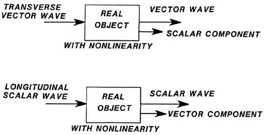

SLIDE 45.
NONLINEARITIES
CAUSE SHIFTING
[PARTIAL TRANSLATION]

Here
we show the results of electrical nonlinearities in an object which
encounters a true translated (non-hooking) scalar wave. All
objects have some electrical nonlinearities in them, and so all act
partially as translators. |